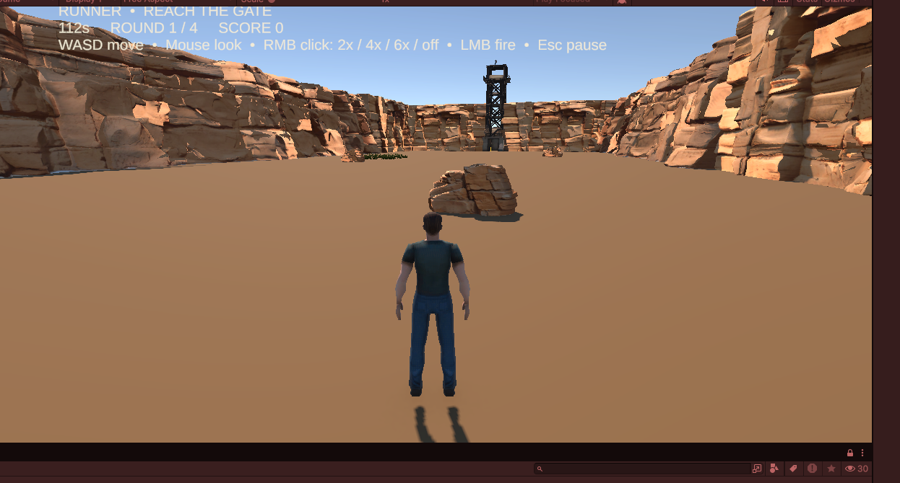

SnipersAim
Sniper-versus-runners multiplayer, with an accepted canyon baseline and a separate Last Train Yard arena awaiting its first recorded gameplay check.
Keep what already works
The owner accepted the balanced canyon obstacles, grass, rifle and runner fixes, and reported the invisible block fixed. Do not re-open the old sparse-cover/grass/rifle task list or regenerate the accepted layout.
The same-Wi-Fi two-PC result is owner-reported LAN evidence, not an internet/relay test or a scored test matrix for every rule.
Last Train Yard
A separate authored 160 × 220 yard with the SW/NE design orientation and 256 added props. The generated Unity scene and audit were pushed at cc17356; it does not replace the accepted canyon.
The 12:39 UTC audit records 6,552 visual meshes, 478 collision meshes and 17 material mappings. These are setup counts, not frame-rate or gameplay measurements.
One next step, when resuming
- Open the existing saved
LastTrainYard.unityat the exact path in the Runbook; do not run the generator again. - Add that scene, enabled, to the active Build Profile's Scene List while preserving existing entries and order. Do not make it the default startup scene.
- Enter Play Mode, choose Practice Runner, check standing on the ground and basic movement, then retain a Game view screenshot and any Console error.
Pending: no subsequent owner report has established that this Yard practice check passed. The earlier audit's save/reopen flag predates the lifecycle fix and is not reliable reopening evidence. Read the pinned audit; see the Test matrix for scope.
Working arrangement
Assistant prepares scoped changes and pushes; the owner performs clear Unity steps. The Antigravity workflow is disabled and its watcher paused. ECC is optional, explicit Use once reference material, not an automatic Unity worker. There is no mandatory gameplay-certification loop.
Use the tabs
Taskboard and Runbook are current. History, Game design and Screenshots retain their dated development context; old images do not represent the accepted current layout. Sources separates owner reports, repository evidence and unperformed tests.
